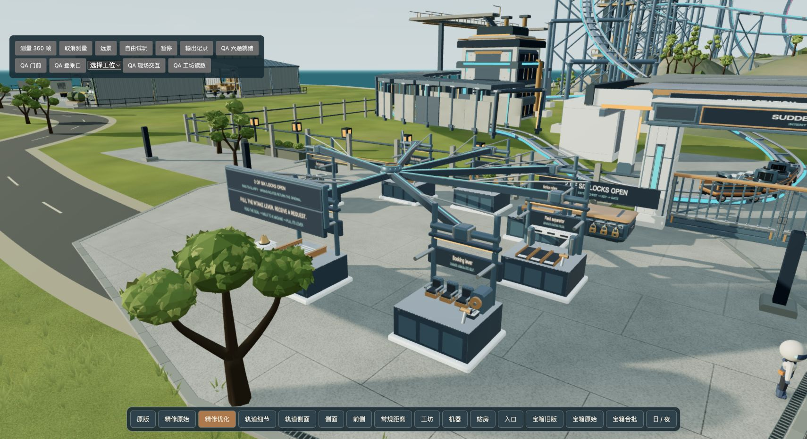

<!doctype html>
<html lang="zh-CN">
<meta charset="utf-8"><meta name="viewport" content="width=device-width,initial-scale=1">
<title>过山车地面 · 前后对照</title>
<style>
*{box-sizing:border-box}body{margin:0;background:#17262c;color:#e6e8df;font:16px system-ui,sans-serif}main{max-width:1500px;margin:auto;padding:24px}header{display:flex;align-items:center;justify-content:space-between;gap:20px;margin-bottom:16px}h1{font-size:23px;font-weight:550;margin:0}button,a{font:inherit;color:inherit}button{border:1px solid #6b827e;background:transparent;border-radius:6px;padding:7px 16px;cursor:pointer}button[aria-pressed=true]{background:#c7b991;color:#18282d}figure{margin:0;position:relative;aspect-ratio:1710/931;overflow:hidden;background:#122127}img{display:block;width:100%;height:100%;object-fit:contain;position:absolute;inset:0}.old{clip-path:inset(0 50% 0 0)}.line{position:absolute;inset:0 auto 0 50%;width:2px;background:#e7d5ab;pointer-events:none}.label{position:absolute;top:12px;background:#17262ce8;padding:6px 10px;border-radius:4px}.before{left:12px}.after{right:12px}input{width:100%;margin:16px 0;accent-color:#c7b991}footer{font-size:14px;color:#b3c2be;display:flex;gap:20px;justify-content:space-between}a{color:#cfdda9}
</style>
<main><header><h1>过山车地面精修</h1><nav aria-label="比较时段"><button data-time="day" aria-pressed="true">正午</button> <button data-time="night" aria-pressed="false">深夜</button></nav></header>
<figure><div class="line"></div><span class="label before">原版</span><span class="label after">精修后</span></figure>
<input aria-label="拖动比较前后画面" type="range" min="0" max="100" value="50">
<footer><span>同机位、同曝光、同画布的实际游戏截图。</span><a href="/world/?start=coaster&quality=balanced&paused=1&ground=v3">进入试玩</a></footer></main>
<script>
const range=document.querySelector('input'),old=document.querySelector('#old'),line=document.querySelector('.line');
range.oninput=()=>{old.style.clipPath=`inset(0 ${100-range.value}% 0 0)`;line.style.left=range.value+'%'};
document.querySelectorAll('button').forEach(b=>b.onclick=()=>{document.querySelectorAll('button').forEach(x=>x.setAttribute('aria-pressed',String(x===b)));old.src='before-'+b.dataset.time+'.jpg';document.querySelector('#new').src='after-'+b.dataset.time+'.jpg'});
</script></html>
